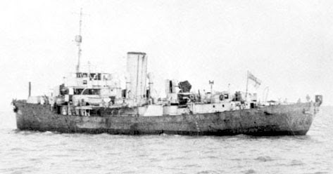
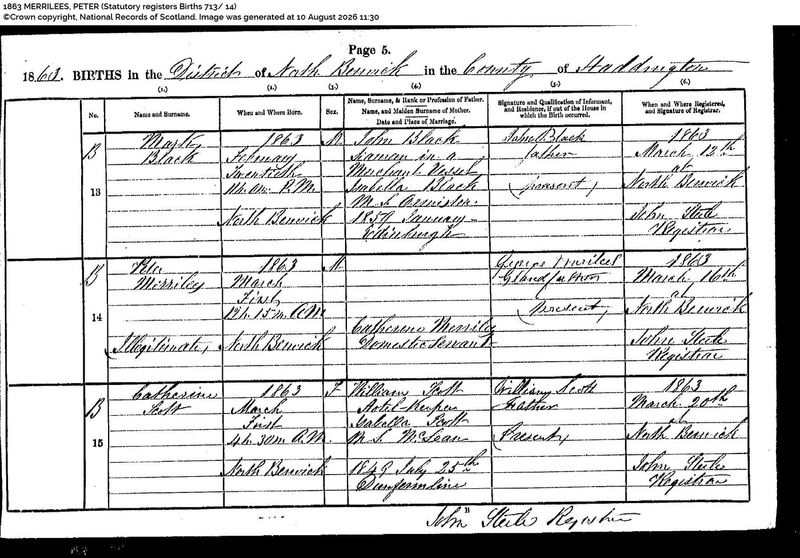
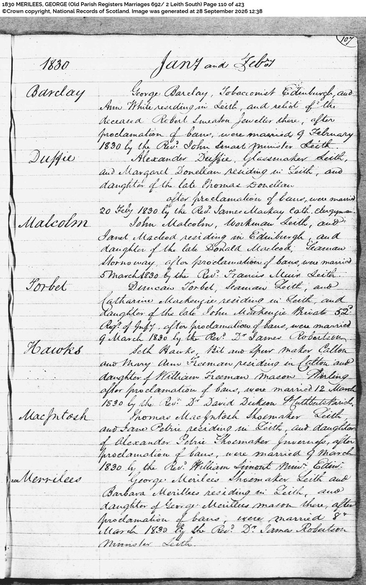
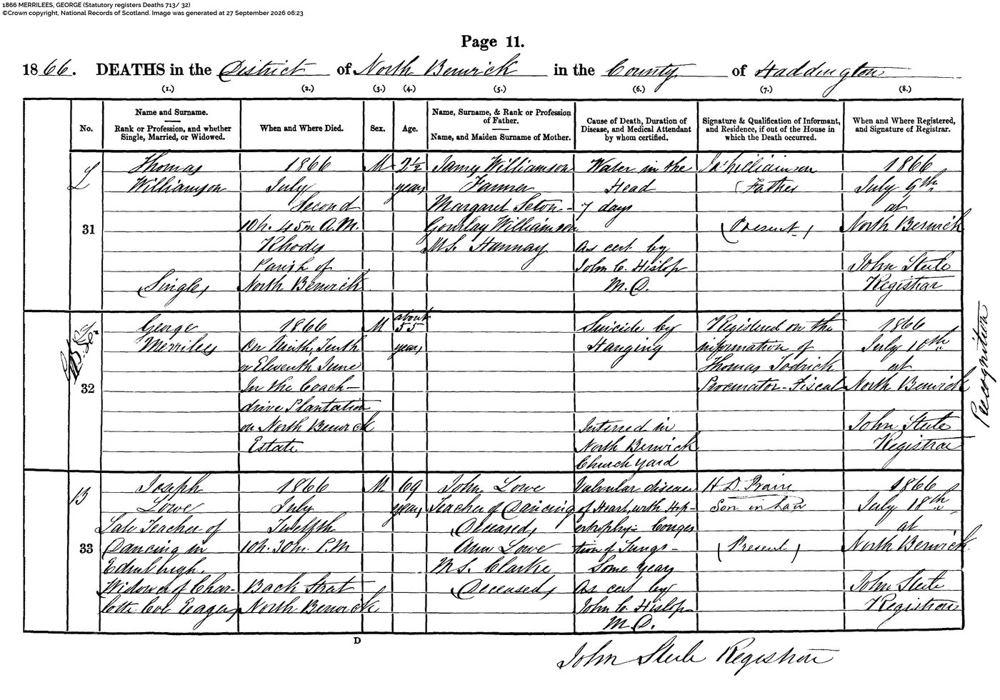
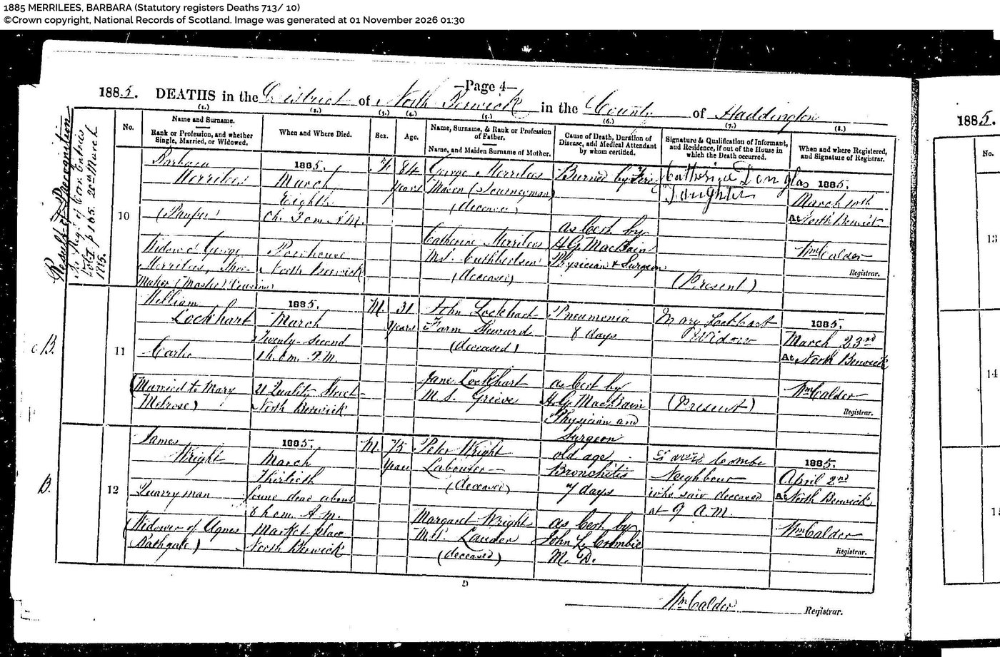
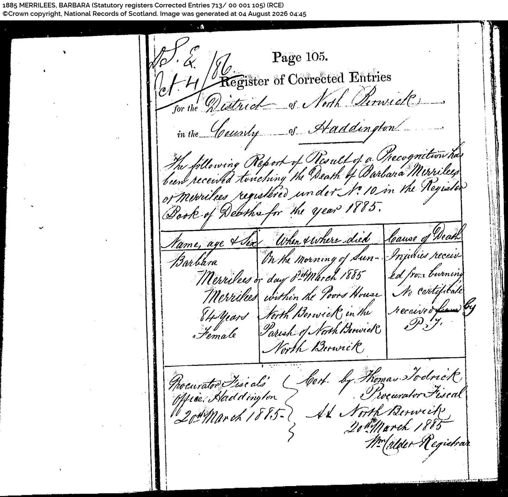

Finding Papa in the Records
The story Papa told
From Chapter seven “A Seafarer’s Chest”, Hameward Bend – A Family’s Journey Home.
“Papa could tell a good story. He'd happily repeat them on request. He would begin dramatically. We were back in World War Two. His ship was under attack, had been torpedoed. There was a hole in it. Disaster threatened. Never fear, Frank was here. There was only one thing for it. He'd stuck his backside in the hole and saved the ship.
“You did not, Papa!”
He would laugh.
And that was that.
No mention of minesweeping and convoys. No mention of the things for which he had actually been decorated. Instead, we got Papa's bottom saving the ship.”
What the records revealed
Years later, finding Papa’s name in the casualty register led me to the story of HMS Snapdragon.
The casualty register
Frank Dawe — injuries following the sinking of HMS Snapdragon
19 December 1942
Frank survived the sinking of HMS Snapdragon with fractures to his right arm and right leg. Rescued by HMS Erica, he was brought back to Benghazi for treatment and later transferred to hospital in Alexandria.
Summary based on the casualty register and the account in “The Navy”, Hameward Bend.
What happened to HMS Snapdragon
From Chapter 26 “The Navy”, Hameward Bend – A Family’s Journey Home.
“Along the North African coast, the dangerous work of keeping the sea lanes open continued.
At 19:00 hours on 19 December 1942, HMS Snapdragon sailed from Benghazi. The Flower-class corvette had been selected to act as Senior Escort Officer for the convoy and sailed with Erica, Southern Maid, Seaham and Cumbrae, escorting three merchant ships.
The convoy headed out into the Mediterranean.
At 20:29 hours, Luftwaffe aircraft approaching Benghazi found them.
The attack came quickly.
A bomb struck Snapdragon amidships. The explosions tore through the ship, leaving her fatally damaged.
HMS Snapdragon sank in four or five minutes.
Men were thrown into the water.
Frank was in the sea.
The men in the sea struggled to make safe depth charges that threatened to explode amongst them.
Her commanding officer, Commander H. C. Simms, DSO, survived the attack but died from his injuries a few days later. Everyone else on the bridge that day was killed.
Erica picked up sixty survivors, including Frank, and brought them back to Benghazi.
Frank had broken his right arm and right leg. Initially treated at a field hospital, he was later transferred to hospital in Alexandria.
Twenty-four men from Snapdragon died as a result of the attack.”

HMS Snapdragon at Bandar Shapur, Iran, August 1941. Australian War Memorial, photograph 134400. Public domain.
Following the evidence
Following the Merrilees Family
Introduction
The search began with Peter Merrilees and led back through the lives of his mother and grandparents. Birth and marriage entries, Kirk Session minutes and death records gradually revealed a family story marked by hardship—and left questions I have yet to answer.
A birth and a question
Peter was born on 1 March 1863, before his mother Catherine married. I wanted to understand the world in which she was raising him, and what the records might reveal about her life.


Birth registration of Peter Merrilees, 1 March 1863, North Berwick, Haddingtonshire. Crown copyright, National Records of Scotland, Statutory Registers of Births, 1863, 713/14, p. 5. Accessed through ScotlandsPeople.
The Kirk Session
On the very day Peter was born, the North Berwick Kirk Session was considering another parishioner’s conduct. Finding this entry brought the moral scrutiny of the time into sharp focus.
North Berwick Kirk Session minutes, 1 March 1863. CH2/285/13, p. 229. A contemporary example concerning another parishioner.
Called before the Kirk Session
In nineteenth-century Scotland, the Kirk Session—the parish minister and elders—could summon parishioners to answer questions about conduct the Church considered sinful. “Fornication” meant sexual relations outside marriage; “antenuptial fornication” meant relations before a couple’s marriage, even if they had since married.
The Session sought confession and repentance, believing it had a duty to uphold Christian morality within the congregation. Those called before it could be questioned and formally rebuked before being restored to full participation in church life.
These records offer a glimpse of the scrutiny an unmarried mother such as Catherine Merrilees might have faced. I have not found an entry showing that Catherine herself was summoned.
George and Barbara
Their marriage record takes the story back to Leith in 1830. The later discovery of George’s death by suicide brought another painful part of the family’s history into view.


George Merrilees and Barbara Merrilees, marriage entry, 8 March 1830, Leith. Crown copyright, National Records of Scotland, Old Parish Registers Marriages 692/2, p. 110. Image reproduced via ScotlandsPeople.


George Merrilees, death registration, 1866, North Berwick. Crown copyright, National Records of Scotland, Statutory Registers of Deaths, 1866, 713/32, p. 11. Image reproduced via ScotlandsPeople.
Barbara’s final record
Barbara’s death register records her as a pauper. The corrected entry records injuries from burning within North Berwick Poor House in March 1885.
The documents give the circumstances of her death. They cannot tell me everything about the life she had lived.


Death registration of Barbara Merrilees, 8 March 1885, North Berwick. Crown copyright, National Records of Scotland, Statutory Registers of Deaths, 1885, 713/10, p. 4. Accessed through ScotlandsPeople.


Corrected entry, 20 March 1885, recording a death on 8 March 1885 within North Berwick Poor House. Crown copyright, National Records of Scotland, Statutory Registers Corrected Entries 713/00 001 105, p. 105. Accessed through ScotlandsPeople.
The search continues
Some discoveries answer a question. Others reveal how much remains unknown. Catherine’s possible appearance before the Kirk Session remains an open question.
Sources
Record images reused under the Open Government Licence v3.0.
The Carradale
The family connection
The story of the Carradale begins, for me, with Peter Merrilees, whose working life at sea is part of our family history in Hameward Bend – A Family’s Journey Home. His voyages carried him between Britain and ports around the world. In October 1903, he arrived in Sydney aboard the four-masted Carradale, serving as First Mate.
While tracing Peter’s voyages, I came across an unexpected name on the ship’s arrival record: Gregory Robinson, a marine artist listed as a tourist. The same handwritten document records Alexander Smith as Master, Peter as First Mate and Robinson as a passenger.
One man was helping to run the ship; the other was observing the maritime world as an artist. We cannot know whether Peter and Gregory became acquainted. But the record places them aboard the same vessel, and Robinson’s surviving maritime work offers another way to approach the world in which Peter spent so much of his life.
That is why this particular voyage belongs in our family archive. The official records preserve Peter’s name, rank and journey; the story of Robinson’s sketches helps us imagine the visual surroundings of a working sailing ship without pretending to know Peter’s private thoughts or experiences.
A voyage shared
On 19 October 1903, the four-masted sailing ship Carradale arrived in Sydney from Hamburg. Among those recorded aboard were Peter Merrilees, serving as First Mate, and Gregory Robinson, travelling as a tourist. One was a professional seaman; the other was an artist fascinated by the world of sailing ships. Their names on the same arrival record provide an unexpected meeting point between family history and maritime art.
Peter Merrilees: the First Mate
For Peter, this was part of a working life spent at sea. Carradale was a large cargo-carrying sailing vessel, recorded in the family manuscript as 2,085 tons, with four steel masts. A First Mate held a demanding position: supervising deck work, helping oversee safe cargo stowage, maintaining discipline and readiness, and standing watches as the ship made her way across the oceans. Such duties give us a sense of the skill and endurance required, though they are not a day-by-day account of what Peter personally did on this passage.
Gregory Robinson: the artist
Gregory Robinson approached the voyage with a different purpose. In an account by Peter Vilhelm Nielsen, two sketchbooks attributed to Robinson—one associated with Carradale's Hamburg-to-Sydney passage in 1903—contain studies of changing weather and the appearance of the sea. Nielsen describes 28 sketches, most concerned with marine conditions, with a handful depicting ships. The attribution and any reproduction of these images should be confirmed with the holding collection or rights owner.
The ocean between them
A long passage in a square-rigged sailing ship depended on wind, weather and coordinated labour. Heavy seas, wet canvas, cold watches and the risks of shifting cargo were all familiar hazards of the trade. Robinson's studies suggest an eye attentive to changing skies and water; Peter's work would have required constant attention to the vessel and those aboard. We cannot know whether the two men spoke, or what either thought of the other. Yet the surviving record places them on the same ship, experiencing the same journey from very different positions.
Sydney, October 1903
The Carradale's arrival record gives this story its firmest anchor: a date, a ship, a route and two names. It allows us to set an ancestor's working life beside the work of an artist whose sketches may help modern readers imagine the visual world of such a voyage. It is a connection that would otherwise have been easy to miss.
Why this belongs in the family archive
Peter Merrilees’s wider seafaring life is explored in Hameward Bend – A Family’s Journey Home. This companion feature follows one documented voyage in greater detail, bringing together a family ancestor, a surviving arrival list and the work of a marine artist. Visitors who would like the fuller family story can continue in the book.
Discover Peter Merrilees’s wider story in Hameward Bend – A Family’s Journey Home.